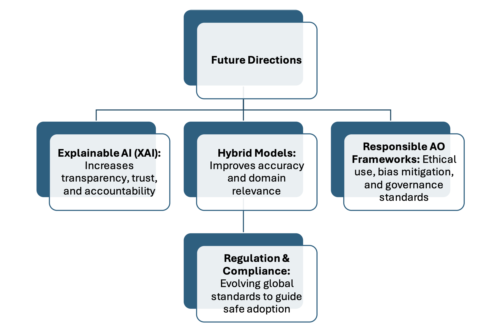

Literature Review
Large Language Models (LLMs) are a class of foundation models trained on massive text corpora using Transformer architectures to perform a wide range of language understanding and generation tasks. Systems such as GPT-3/4, PaLM, and LLaMA demonstrate emergent capabilities including few-shot generalisation, instruction following, and multimodal reasoning, enabling high-fidelity conversational interaction and domain adaptation without extensive task-specific training (Brown et al., 2020; OpenAI, 2023; Chowdhery et al., 2022; Touvron et al., 2023).
Within E-Business, value creation has long been driven by general-purpose technologies such as cloud computing, analytics, and mobile platforms. Today's digital commerce, however, is increasingly defined by data- intensive and interaction-rich practices, including personalised marketing, omnichannel service, and platform governance (Laudon and Traver, 2023). Against this backdrop, LLMs are salient because they operate directly on the primary "interface" of digital business language offering step-changes in customer service, personalization, and decision-making.
Yet despite rapid adoption, evidence on the effective and responsible use of LLMs in E-Business remains fragmented. Studies report both significant gains (e.g., retail personalization improving conversions) and critical risks (e.g., hallucinations and compliance challenges in healthcare and finance). These contradictions suggest that the value of LLMs is not uniform but highly context-dependent. This review adopts business value as its primary analytical lens, while recognising governance and ethics as boundary conditions that shape sustainable adoption.
This review narrows its focus to three key domains where LLMs are most transformative and contested: customer service, personalization/marketing, and governance/ethics. By critically comparing optimistic and cautious findings within and across sectors, the review highlights where LLMs generate measurable business value, where risks outweigh benefits, and how governance structures condition long-term outcomes. The analysis proceeds by outlining the conceptual background and review method; synthesising empirical literature on the three domains; drawing out contradictions across studies; and mapping these findings to future research and responsible adoption pathways.
The adoption of Artificial Intelligence (AI) in business has progressed through distinct stages, each unlocking new forms of automation and value creation. Early AI in commerce relied on rule-based expert systems, where knowledge was encoded into fixed decision trees and if-then rules. This enabled limited automation but lacked adaptability.
The next wave introduced machine learning (ML) and statistical modeling, allowing systems to learn from data. Applications such as customer churn prediction, sales forecasting, and recommendation engines became central to e-commerce (Jordan & Mitchell, 2015). Deep learning further expanded the scope, powering advances like image recognition for retail, fraud detection, and dynamic pricing.
The current phase, generative AI, is driven by Large Language Models (LLMs). Unlike prior approaches, LLMs are trained on massive text corpora with Transformer architectures, enabling general-purpose language modeling and emergent capabilities such as few-shot learning and contextual reasoning.
In E-Business, this shift is particularly significant because language is the core interface for customer engagement and content-driven operations. Four domains highlight LLMs' transformative role:
Together, these domains illustrate how LLMs extend prior AI capabilities by integrating understanding, generation, and adaptation into business workflows. This progression underscores their disruptive potential, while also raising new questions about reliability, governance, and long-term business impact.
Ensuring credibility and reproducibility is essential when reviewing literature in rapidly evolving fields such as artificial intelligence and e-business. This review adapts principles from the systematic review methodology (Tranfield, Denyer & Smart, 2003), applying them in a way suitable for the scope of an academic literature review.
This structured approach provides a transparent, replicable foundation that strengthens the validity of the conclusions presented in subsequent sections.
By enabling new forms of interaction, automation, and intelligence across the value chain, LLMs are reshaping digital commerce. Their applications in E-Business extend from customer-facing functions to back-end operations and strategic decision-making. The following table summarizes key domains of application identified in the literature:
| Area | LLM Role | Business Value |
|---|---|---|
| Customer Service | Power chatbots and virtual assistants that provide instant, multilingual, context-aware support. | Reduces response time, enhances customer satisfaction, and enables 24/7 service. |
| Marketing | Generate personalised product descriptions, advertising copy, and campaign messages. | Improves targeting, strengthens engagement, and boosts conversion rates. |
| Sales | Enable conversational shopping, automate product recommendations, and support cross-/up-selling. | Streamlines purchase journeys, increases order value, and drives revenue growth. |
| Decision-Making | Summarise reports, extract insights from large datasets, and support trend analysis. | Enhances managerial decision-making, accelerates analysis, and informs strategy. |
| Fraud Detection | Assist in anomaly detection by interpreting transaction patterns and generating alerts. | Reduces risk exposure, supports compliance, and safeguards customer trust. |
These applications highlight the versatility of LLMs as general-purpose technologies that extend beyond narrow task automation. Instead, they integrate into workflows across multiple domains, from customer support to high-level business intelligence. Their adoption, however, is shaped not only by technical capabilities but also by organisational readiness, regulatory compliance, and customer trust.
The integration of Large Language Models (LLMs) into E-Business environments presents opportunities that extend beyond efficiency improvements, enabling firms to redefine processes, create novel value propositions, and strengthen competitive positioning. At the same time, adoption introduces significant challenges that are not solely technical but also ethical, social, and regulatory in nature. A balanced perspective is therefore critical. Table 2 summarises the main opportunities and concerns identified in the literature.
| Opportunities | Challenges |
|---|---|
| Enhanced customer engagement through natural, human-like interactions. | Risk of inaccuracies and hallucinations in generated responses. |
| Cost reduction via automation of routine tasks such as support and content creation. | Ethical issues, including bias and lack of transparency in model outputs. |
| Scalability to serve customers globally across languages and time zones. | Data privacy and security concerns in handling sensitive customer information. |
| Improved personalisation and targeting in marketing and sales. | Potential workforce displacement due to automation of knowledge-based tasks. |
| Competitive advantage for early adopters in fast-moving digital markets. | Regulatory uncertainty surrounding AI compliance and responsible adoption. |
This juxtaposition highlights the dual-edged impact of LLMs: while they promise innovation and competitive gains, unresolved challenges around trust, ethics, and governance could hinder sustainable adoption. The following section critically contrasts optimistic and cautious perspectives in the literature, providing a deeper understanding of where LLMs deliver value reliably and where caution is warranted.
The literature on Large Language Models (LLMs) in E-Business reflects a rapidly developing field characterised by both enthusiasm and caution. While some studies emphasise the transformative potential of LLMs, others highlight unresolved risks, methodological limitations, and broader societal implications. A critical comparison reveals diverging perspectives, sectoral experiences, and gaps in the evidence base.
Proponents argue that LLMs function as general-purpose technologies with the capacity to reshape digital commerce. Bommasani et al. (2021) frame foundation models as enablers of innovation across industries, capable of driving new forms of productivity and competitive advantage. Paschen, Kietzmann and Kietzmann (2020) highlight how AI-powered automation facilitates scalable, data-driven marketing strategies, while retail studies show LLMs improving customer engagement through personalisation and conversational commerce. Collectively, these perspectives underscore efficiency gains, enhanced decision-making, and expanded customer value creation.
By contrast, critical voices stress the risks of premature or unregulated adoption. Bender et al. (2021) characterise LLMs as "stochastic parrots" systems that may generate fluent but unreliable and biased outputs. Ji et al. (2023) document the problem of hallucinations, raising concerns about trustworthiness in customer-facing contexts. Ethical issues, including fairness, accountability, and transparency, are consistently cited as barriers to sustainable adoption.
For instance, Liu et al. (2023) report that LLM-assisted anomaly detection improves fraud detection accuracy, yet Ji et al. (2023) caution that the same models may hallucinate, producing false positives that undermine compliance. Similarly, while retail studies highlight improved personalisation (Zhang et al., 2019), Bender et al. (2021) warn that biased recommendations could reinforce consumer discrimination. These contradictions highlight the contested evidence base.
The literature also points to sector-specific differences in adoption outcomes. In retail e-commerce, LLMs demonstrate clear benefits in low-risk domains such as product personalisation and automated content generation (Zhang et al., 2019). In contrast, sectors like finance and healthcare face heightened risks: misinformation or biased outputs can result in regulatory breaches or direct harm to consumers (Leslie, 2020). This divergence suggests that the value-risk equation of LLMs is context-dependent.
Current studies exhibit methodological shortcomings. Evidence is often based on short-term case studies or conceptual models rather than longitudinal data. Small sample sizes, limited cross-industry comparisons, and a focus on technical benchmarks over organisational outcomes constrain the generalisability of findings.
Disagreements in the literature often arise from sectoral differences in risk tolerance (e.g., retail vs. finance), methodological variation (short-term pilots vs. longitudinal analyses), and differing evaluative metrics (customer satisfaction vs. regulatory compliance). Missing in many arguments is systematic evidence of long-term organisational outcomes, which constrains consensus.
Despite the growing body of literature, several gaps remain:
Taken together, the literature reveals a dual narrative. On one hand, LLMs promise efficiency, scalability, and innovation; on the other, they raise concerns around bias, trustworthiness, and regulatory uncertainty. A key takeaway is that the impact of LLMs depends on context, governance, and strategic alignment. To advance understanding, future research must move beyond isolated case studies and explore systemic, cross-sectoral, and long-term implications of LLM adoption.
As Large Language Models (LLMs) continue to advance, their role in E-Business is expected to both deepen and diversify. The trajectory of adoption will depend not only on technical progress but also on the development of governance mechanisms, integration with complementary technologies, and adaptation to emerging regulatory requirements. The literature points to several key future directions:
A critical challenge for current LLMs is their "black-box" nature, which limits transparency in decision- making. Future research and practice are expected to emphasise explainability mechanisms that make outputs interpretable for business leaders, particularly in high-stakes contexts such as finance, healthcare, and compliance (Doshi-Velez and Kim, 2017). This directly addresses the black-box concerns raised in Ji et al. (2023) and Bender et al. (2021).
LLMs are likely to be increasingly integrated with domain-specific knowledge bases and specialised AI tools. Such hybrid systems can mitigate limitations by grounding general-purpose models in contextual expertise, thereby improving accuracy and relevance in areas like legal services, healthcare, and fraud detection (Bommasani et al., 2021). This responds to evidence of sectoral divergence, where domain-specific expertise is needed to reduce risk (Leslie, 2020).
Future E-Business strategies will increasingly require formal governance structures for AI adoption. Ethical guidelines, accountability mechanisms, and risk management frameworks will become essential to ensure fairness, mitigate bias, and maintain consumer trust (Floridi and Cowls, 2021). This links to governance gaps identified earlier as a key challenge to sustainable adoption.
The regulatory environment for AI is rapidly evolving. Initiatives such as the EU AI Act and parallel frameworks in North America and Asia are expected to impose stricter requirements around transparency, data protection, and accountability (Veale and Borgesius, 2021). For E-Business firms, regulatory compliance will shift from an optional consideration to a strategic necessity. This directly extends the regulatory uncertainty noted in finance and healthcare adoption studies.
Rather than displacing human labor, the next wave of adoption is likely to prioritize collaborative intelligence systems in which human expertise and machine capabilities complement one another. This approach could enhance creativity, problem-solving, and customer interaction (Brynjolfsson and McAfee, 2017). This mitigates the workforce displacement concerns raised in the challenges section.
Finally, the long-term effects of LLM integration on organisational culture, workforce skills, and value creation remain underexplored. Questions about environmental sustainability, such as the energy consumption involved in training and deploying large models are gaining prominence. Future strategies may require alignment with green AI principles to balance innovation with environmental responsibility (Goldstein et al., 2023). This connects to the research gap on long-term organizational and environmental impacts.
This review framed its analysis primarily through the business value lens, while acknowledging that governance and ethics define the conditions under which such value can be realised responsibly. The rise of Large Language Models (LLMs) represents a transformative moment in the evolution of E-Business. These technologies are reshaping customer engagement, operational efficiency, and strategic decision-making, offering opportunities in customer service, personalization, marketing, and global scalability.
However, adoption also brings challenges. Concerns around accuracy, bias, data privacy, and workforce disruption underscore the need for responsible governance and robust regulatory compliance. The future success of LLMs in E-Business will depend on balancing innovation with accountability.
Emerging approaches such as explainable AI, hybrid domain-specific systems, and ethical adoption frameworks will play a critical role in addressing limitations while unlocking greater value. Importantly, LLMs should not be viewed as replacements for human expertise, but as complementary tools that augment human judgment and reshape digital commerce.
The future directions outlined explainability, hybridisation, governance frameworks, regulation, and sustainability, were directly derived from the gaps identified in current research, ensuring that recommendations address real limitations in the evidence base.Ultimately, businesses, researchers, and policymakers who harness these technologies responsibly will be best positioned to drive the next wave of digital innovation and long-term value creation.